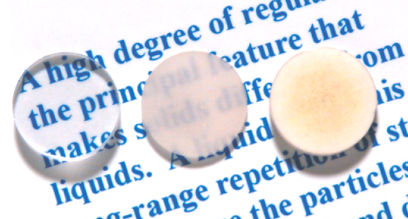
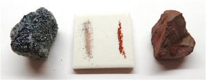

Propriedades físicas dos minerais
As propriedades físicas são muito importantes para ajudar na identificação de um mineral. Elas ajudam a descrever e caracterizar os minerais. As propriedades físicas são resultado da composição e das características estruturais do material.
A seguir, apresentaremos uma descrição sucinta de algumas dessas propriedades, tais como:
Forma/Hábito
É comum que alguns estudantes confundam esses dois conceitos. Forma é a expressão externa do arranjo atômico do mineral. As formas refletem a influência do sistema cristalino do mineral, respeitando sua simetria, como a forma cúbica e octaédrica, por exemplo. Geralmente, o hábito fornece a ocorrência agregada do mineral, como geodos, estalactites, entre outros. Geralmente, quando o mineral se forma sem restrição de espaço, ele desenvolve cristais individuais com faces bem formadas.
Atribuindo valores específicos aos comprimentos segundo os eixos e aos ângulos entre eles, podem construir-se células unitárias de diferentes tipos. Os sitemas cristalógrafos mostraram que, para criar todos os tipos de redes de pontos, são necessários apenas sete tipos distintos de células unitárias. Estes sistemas cristalográficos estão enumerados na primeira tabela a seguir. Muitos dos sete sistemas cristalográficos apresentam variações da célula unitária básica. A. J. Bravais mostrou que 14 células unitárias padrão podem descrever todas as possíveis redes. Estas redes de Bravais estão representadas segunda tabela a seguir.
Tabela 1- Células unitárias convencionais das 14 redes de Bravais, agrupadas por sistemas cristalográficos. Os círculos indicam os nós da rede que, quando localizados em faces ou em vértices, são partilhados por outras células unitárias idênticas.
Fonte: "http://www.foz.unioeste.br/~lamat/downmateriais/materiaiscap3.pdf"
Tenacidade
A propriedade é definida por Dana – Hurbut em seu Manual de Mineralogia como “a resistência que um mineral oferece ao ser esmagado, rompido ou rasgado” e sendo assim esta propriedade determina a coesão de um mineral. Assim um mineral resiste a pressão, percussão ou tração sem se deformar ou romper-se. Em relação à tenacidade um mineral pode ser:
- Quebradiço: um mineral que se quebra ao ser pressionado fortemente ou sofrer algum impacto, como quartzo por exemplo.
- Maleável: um mineral que pode ser transformado em lâminas delgadas por percussão, como o Ouro, Cobre, Prata, Platina, Ferro.
- Séctil: um mineral que pode ser cortado em aparas delgadas com um canivete, como no Talco, Bismuto, Argentita.
- Dúctil: um mineral que pode ser estirado para formar fios como na família do Amianto, Cobre, Ouro, Platina, Prata.
- Flexível: um mineral que se encurva, mas não retorna à sua posição primitiva quando a pressão cessa, como ocorre no Cobre Nativo, folhas de Grafita, lâminas de Ouro Pigmento, lâminas de Molibdenita.
- Elásticotambém denominado plástico, é quando um mineral, que depois de ter sido encurvado, retorna a sua posição original ao cessar a pressão, como ocorre nas lâminas finas de minerais da família da Mica.
Clivagem, partição e Fratura
Clivagem, Partição e Fratura são termos que se referem à reação de um material cristalino a uma força excessiva. São propriedades relacionadas a tendência do mineral se romper, seguindo ou não planos preferenciais, em resposta a um esforço físico externo.
Esta reação dependerá fundamentalmente do tipo de ligação envolvida e da presença de defeitos ou descontinuidades na rede cristalina do mineral. Se a pressão exercida sobre o mineral exceder as forças de ligação, o mineral se partirá. Muitos minerais possuem direções planares em suas estruturas que são sistematicamente mais fracas que outras direções. Isto se deve basicamente à presença de planos onde a densidade de ligações por unidade de volume é menos em relação às demais direções. Também geram planos de fraqueza a presença de ligações com menor força orientadas de modo planar.
A diferença entre clivagem, partição e fratura estará disposta aque em breve.
Dureza
Dureza é uma das propriedades ligadas à coesão, talvez, uma das mais importantes para a classificação dos minerais. Os mineralogistas definem dureza como a resistência que a superfície lisa de um mineral oferece ao ser riscada. Como as outras propriedades físicas dos minerais, a dureza depende da estrutura do cristal, e sendo assim, quanto mais forte as forças de união entre os átomos, tanto mais duro será o mineral. O grau de dureza é determinado observando-se a facilidade ou a dificuldade relativa com que o mineral é riscado por outro mineral, ou por uma lima, canivete, placa de vidro, etc. Pode-se dizer então, que a dureza de um mineral o classifica pela sua facilidade de ser riscado ou de riscar um mineral.
A dureza é determinada com o auxílio da escala de dureza. Mohs, um mineralogista alemão, escolheu no século XVIII, 10 minerais que ele considerou como padrões de dureza. Estes minerais de durezas diferentes, relativamente fáceis de serem encontrados (a exceção do Diamante), eram utilizados para riscar as superfícies dos minerais. O mineral considerado de dureza mais baixa, o Talco, corresponde ao grau 1 da escala de dureza de Mohs. Este mineral é riscado pela unha. O mineral de maior dureza é o Diamante, com dureza 10.

Peso Específico ou densidade relativa
O peso específico ou densidade relativa é um número que exprime a relação entre o peso do mineral e o de igual volume de água a 4ºC. Se um mineral tem peso específico 2,65 (que é o do Quartzo), isto significa que cada cm3 do mineral pesa 2,65 vezes mais que o cm3 de água. Esta propriedade é praticamente invariável no Quartzo, e sendo assim, o utilizamos como padrão para aferir a balança de tríplice escala usada para determinação desta propriedade.
Diafaneidade
É a capacidade dos minerais de permitirem que a luz os atravesse, ou seja, de transmitir a luz. Usam-se os seguintes termos para exprimir os vários graus desta propriedade:
- Transparente: Permitem que luz o atravesse com facilidade, permitindo muitas vezes perceber perfeitamente o contorno de um objeto visto através dele ou inclusões dentro dele, como no Quartzo Hialino, topázio, etc.
- Translúcido: A luz ou não atravessa, ou atravessa com muita dificuldade pelo material, não deixando claro os contornos de um objeto visto através dele ou dentro dele, como no Quartzo Branco, em algumas Calcitas, alguns feldspatos, etc.
- Opacos: A luz não o atravessar o material, mesmo em suas bordas mais delgadas, como nas Hematitas, ouro, etc.
Brilho
Brilho é o aspecto geral da superfície de um mineral quando sobre ele incide um feixe de raios luminosos, isto é, é a aparência geral da superfície de um mineral à luz refletida. O brilho depende, pois da reflexão da luz, da natureza da superfície do mineral, do valor do índice de refração e da absorção da luz pelo mineral.
Cor
a cor do mineral é uma das propriedades físicas utilizadas na sua determinação. Os minerais quando observados em superfícies recentes apresentam geralmente uma cor definida e constante. Chamamos a atenção para a expressão “superfícies recentes”, pois em outras superfícies o mineral poderá apresentar-se alterado, logo terá uma cor diferente da normal. Entretanto pode-se encontrar alterações na cor de um mineral em função de pequenas modificações na sua composição química, como a substituição de parte de um elemento por outro. Existem minerais, como no caso do Quartzo, que em função da presença de diferentes impurezas pode apresentar uma grande variedade de cores. Para minerais não metálicos a cor não é uma propriedade tão indicativa quanto para minerais de brilho metálico.
Substâncias Cromóforas: são as substâncias que geram a cor como o cromo na Esmeralda, Fuchsita e Andradita, o ferro na ametista, na Citrina e no Heliodoro, o titânio no Quartzo Rosa e o cobre na Azurita.
Quanto à coloração, os minerais podem ser classificado da seguinte forma:
- Minerais Idiocromáticos: são aqueles que apresentam coloração fixa, isto é, todas as amostras do mesmo mineral apresentam sempre a mesma coloração como no Enxofre, na Galena, na Pirita. Em resumo, nos minerais idiocromáticos os próprios elementos que fazem parte da composição química do mineral é que geram a cor.
- Minerais Alocromáticos: são aqueles que apresentam coloração variada, isto é, cuja coloração difere da normal como no caso do Quartzo (incolor, violeta, verde, amarelo, marrom, fumê) ou a Fluorita (incolor, rósea, amarela, azul, verde, violeta). Nos minerais alocromáticos os elementos que geram a cor não fazem parte da composição química normal do mineral.
Traço
O traço, também denominado como raia, é a cor do pó do mineral deixado sobre uma placa de porcelana branca e despolida. É de grande importância porque a cor de um mineral pode variar amplamente, entretanto o seu traço é comumente constante. A maior parte dos minerais tem traço incolor, entretanto, alguns sulfetos e óxidos apresentam traço colorido. Um cuidado deve ser tomado quando se determina o traço de um mineral: deve-se escolher uma face livre de inclusões ou alterações que por ventura possam mascarar o traço. Em caso de dúvida deve-se, com um martelo, tirar algumas lascas na superfície ou raspá-la até que a parte interna fique exposta.